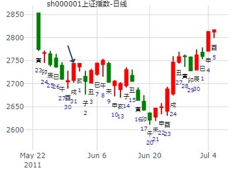
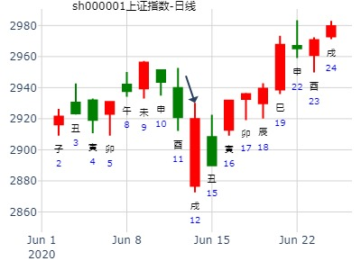
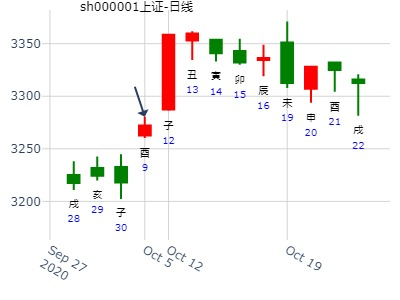

例182、
未月丙午日，占何日雨？得离之旅。
兄弟巳火′世
子孙未土″
妻财酉金′
官鬼亥水′应
子孙丑土″
父母卯木′ 动 子孙辰土
断曰：卯木父动临于旬空，己酉日若不雨，乙卯日必雨。
〖子平凡思注〗父动而空，又入月墓，逢冲、逢值皆为应期。
例183、
或曰：如何定在两日？
余曰：不难，再占一卦。
又得离卦。
兄弟巳火′世
子孙未土″
妻财酉金′
官鬼亥水′应
子孙丑土″
父母卯木′
余曰：此卦还以前卦相同。
又占一卦，得艮之谦卦。
官鬼寅木′世 动 子孙酉金
妻财子水″
兄弟戌土″
子孙申金′应
父母午火″
兄弟辰土″
断曰：甲寅日阴云，乙卯日必雨，辰日而又晴矣。
彼曰：何以知之？
余曰：此卦又是寅木鬼动值旬空，出空之日，必定天变。前卦卯木父变辰土子孙，故知卯日必雨辰日必晴。
果于寅日密云，卯日大雨，辰日大晴。所以动则不为空矣。
〖子平凡思注〗官鬼旬空，出空则变天，但出空亦被子孙克，子孙主晴，故不雨，卯日冲去子孙则雨。
占事：14年2月大盘涨跌？
公历起卦时间：2014年1月30日15时53分 (手工指定)
干支：癸巳年 乙丑月 辛丑日 丙申时 （日空：辰巳）
艮宫：艮为山 (六冲) 兑宫：地山谦
六神 伏神 本 卦 变 卦
腾蛇 官鬼丙寅木 ▅▅▅▅▅ 世 ○→ 子孙癸酉金 ▅▅ ▅▅
勾陈 妻财丙子水 ▅▅ ▅▅ 妻财癸亥水 ▅▅ ▅▅ 世
朱雀 兄弟丙戌土 ▅▅ ▅▅ 兄弟癸丑土 ▅▅ ▅▅
青龙 子孙丙申金 ▅▅▅▅▅ 应 子孙丙申金 ▅▅▅▅▅
玄武 父母丙午火 ▅▅ ▅▅ 父母丙午火 ▅▅ ▅▅ 应
白虎 兄弟丙辰土 ▅▅ ▅▅ 兄弟丙辰土 ▅▅ ▅▅
艮为止，涨涨就涨不动了。
主帖标题: T-Z-G-D上证指数擂台赛第四场第5局（2020年1月17日）G方
公历时间：2020年1月17日8时27分
干 支：己亥年 丁丑月 己未日 戊辰时
旬 空：辰巳 申酉 子丑 戌亥
艮宫：艮为山（六冲） 兑宫：地山谦
六神 【本 卦】 【变 卦】
勾陈 ▄▄▄▄▄ 官鬼丙寅木 世○ ▄▄ ▄▄ 子孙癸酉金
朱雀 ▄▄ ▄▄ 妻财丙子水 ▄▄ ▄▄ 妻财癸亥水 世
青龙 ▄▄ ▄▄ 兄弟丙戌土 ▄▄ ▄▄ 兄弟癸丑土
玄武 ▄▄▄▄▄ 子孙丙申金 应 ▄▄▄▄▄ 子孙丙申金
白虎 ▄▄ ▄▄ 父母丙午火 ▄▄ ▄▄ 父母丙午火 应
螣蛇 ▄▄ ▄▄ 兄弟丙辰土 ▄▄ ▄▄ 兄弟丙辰土
主帖标题: 浅谈2.1日大盘走势
2011年 1月 31日 15时 0分 (起卦方式：手动指定)
干支：庚寅年 己丑月 丙戌日 丙申时 日空亡：午未
神煞：驿马－申 桃花－卯 日禄－巳 贵人－酉，亥
艮宫：艮为山 (六冲) 兑宫：地山谦
六神 伏神 本 卦 变 卦
青龙 官鬼寅木 ▅▅▅▅▅ 世 ○→ 子孙酉金 ▅▅ ▅▅
玄武 妻财子水 ▅▅ ▅▅ 妻财亥水 ▅▅ ▅▅ 世
白虎 兄弟戌土 ▅▅ ▅▅ 兄弟丑土 ▅▅ ▅▅
螣蛇 子孙申金 ▅▅▅▅▅ 应 子孙申金 ▅▅▅▅▅
勾陈 父母午火 ▅▅ ▅▅ 父母午火 ▅▅ ▅▅ 应
朱雀 兄弟辰土 ▅▅ ▅▅ 兄弟辰土 ▅▅ ▅▅
主帖标题: 六爻猜想：2020年2月18日上证收盘指数值?
试测2020年2月18日上证收盘指数个位值-1yn?
公历起卦时间：2020年2月18日14时4分 (电脑自动)
干支：庚子年 戊寅月 辛卯日 乙未时 （日空：午未）
艮宫：艮为山 (六冲) 兑宫：地山谦
六神 伏神 本 卦 变 卦
螣蛇 官鬼丙寅木 ▅▅▅▅▅ 世 ○→ 子孙癸酉金 ▅▅ ▅▅
勾陈 妻财丙子水 ▅▅ ▅▅ 妻财癸亥水 ▅▅ ▅▅ 世
朱雀 兄弟丙戌土 ▅▅ ▅▅ 兄弟癸丑土 ▅▅ ▅▅
青龙 子孙丙申金 ▅▅▅▅▅ 应 子孙丙申金 ▅▅▅▅▅
玄武 父母丙午火 ▅▅ ▅▅ 父母丙午火 ▅▅ ▅▅ 应
白虎 兄弟丙辰土 ▅▅ ▅▅ 兄弟丙辰土 ▅▅ ▅▅

试测大东海A2.18辛卯星期二-2.28何时涨幅最大？
公历起卦时间：2020年2月20日16时13分 (电脑自动)
干支：庚子年 戊寅月 癸巳日 庚申时 （日空：午未）
神煞：驿马－亥 桃花－午 日禄－子 贵人－卯，巳
艮宫：艮为山 (六冲) 兑宫：地山谦
六神 伏神 本 卦 变 卦
白虎 官鬼丙寅木 ▅▅▅▅▅ 世 ○→ 子孙癸酉金 ▅▅ ▅▅
螣蛇 妻财丙子水 ▅▅ ▅▅ 妻财癸亥水 ▅▅ ▅▅ 世
勾陈 兄弟丙戌土 ▅▅ ▅▅ 兄弟癸丑土 ▅▅ ▅▅
朱雀 子孙丙申金 ▅▅▅▅▅ 应 子孙丙申金 ▅▅▅▅▅
青龙 父母丙午火 ▅▅ ▅▅ 父母丙午火 ▅▅ ▅▅ 应
玄武 兄弟丙辰土 ▅▅ ▅▅ 兄弟丙辰土 ▅▅ ▅▅
姓名： 男 占事：华昌化工周线
2014年4月1日
干 支：甲午年 戊辰月 甲寅日 己巳时
旬 空：辰巳 戌亥 (子丑) 戌亥
艮宫：艮为山（六冲） 兑宫：地山谦
六神 【本 卦】 【变 卦】
玄武 ▄▄▄▄▄ 官鬼丙寅木 世O-> ▄▄ ▄▄ 子孙癸酉金
白虎 ▄▄ ▄▄ 妻财丙子水 ▄▄ ▄▄ 妻财癸亥水 世
螣蛇 ▄▄ ▄▄ 兄弟丙戌土 ▄▄ ▄▄ 兄弟癸丑土
勾陈 ▄▄▄▄▄ 子孙丙申金 应 ▄▄▄▄▄ 子孙丙申金
朱雀 ▄▄ ▄▄ 父母丙午火 ▄▄ ▄▄ 父母丙午火 应
青龙 ▄▄ ▄▄ 兄弟丙辰土 ▄▄ ▄▄ 兄弟丙辰土
辰日大跌，墓财。奇怪的是寅与酉日均是涨。
玄机：
1.官鬼寅木不空，以涨为主。
一个老帖子，希望能给大家一点启发。
探测大盘的中线转折位由5-29日高点4335.96点探测如下:
数理卦 -1/高点探测
公历：2007-05-29 15:02
农历：2007年04月13日 甲寅旬 子丑空
丁亥年 乙巳月 癸亥日 庚申时
艮(艮宫 ) 地山谦(兑宫 )
回落 反弹
世▄▄▄▄▄丙寅木官鬼 白虎 ○─→ ▄▄ ▄▄癸酉金子孙
▄▄ ▄▄丙子水妻财 滕蛇 世▄▄ ▄▄癸亥水妻财
▄▄ ▄▄丙戌土兄弟 勾陈 ▄▄ ▄▄癸丑土兄弟
应▄▄▄▄▄丙申金子孙 朱雀 ▄▄▄▄▄丙申金子孙
▄▄ ▄▄丙午火父母 青龙 应▄▄ ▄▄丙午火父母
▄▄ ▄▄丙辰土兄弟 玄武 ▄▄ ▄▄丙辰土兄弟
今天 癸亥日 世(长生) 应(病) 财(临官)
断:
财临日,世在上位化回头克,说明此点为阶段顶部,
山变地 有一下坡过程,回落时段:
寅动取3个月 ,到达8月底9月初
动逢合待冲,申月见底,酉月反弹.
关注周期位:艮7+艮7=7\14 [周] +动爻6=20[周]
或取7月份[农历]
结论:关注农历7月\公历9月初\酉月\14周[目前运行第7周],易出现波段转折.
[备注:与年卦动变相同]
2\时空法探测
时空平衡位 64.84*64.84=4335.96 取64.84为平衡值
时空波动值:1.取64.84天
2.取6.48周 6.48*2=12.96=13周
结论:关注运行时段点6.5周 13周 65交易日处易出现转折.
主帖标题: 上证大盘：阳历六月份运行趋势分析（提防击破2600点）
公历起卦时间：2011年5月31日10时14分 (手工指定)
干支：辛卯年 癸巳月 丙戌日 癸巳时 （日空：午未）
艮宫：艮为山 (六冲) 兑宫：地山谦
六神 伏神 本 卦 变 卦
青龙 官鬼丙寅木 ▅▅▅▅▅ 世 ○→ 子孙癸酉金 ▅▅ ▅▅
玄武 妻财丙子水 ▅▅ ▅▅ 妻财癸亥水 ▅▅ ▅▅ 世
白虎 兄弟丙戌土 ▅▅ ▅▅ 兄弟癸丑土 ▅▅ ▅▅
腾蛇 子孙丙申金 ▅▅▅▅▅ 应 子孙丙申金 ▅▅▅▅▅
勾陈 父母丙午火 ▅▅ ▅▅ 父母丙午火 ▅▅ ▅▅ 应
朱雀 兄弟丙辰土 ▅▅ ▅▅ 兄弟丙辰土 ▅▅ ▅▅
兄弟旺盛暗发，运行未明朗，下跌会持续，会有突击性破位下跌，六月下旬会有局部反弹！围绕2650---2750这一线进行上下震荡！

主帖标题: 周卦例收集2020.05.11-----15上证指数
9 和诣老师
公历时间：2020年5月11日9时0分
干 支：庚子年 辛巳月 甲寅日 己巳时
旬 空：辰巳 申酉 子丑 戌亥
艮宫：艮为山（六冲） 兑宫：地山谦
六神 【本 卦】 【变 卦】
玄武 ▄▄▄▄▄ 官鬼丙寅木 世○ ▄▄ ▄▄ 子孙癸酉金
白虎 ▄▄ ▄▄ 妻财丙子水 ▄▄ ▄▄ 妻财癸亥水 世
螣蛇 ▄▄ ▄▄ 兄弟丙戌土 ▄▄ ▄▄ 兄弟癸丑土
勾陈 ▄▄▄▄▄ 子孙丙申金 应 ▄▄▄▄▄ 子孙丙申金
朱雀 ▄▄ ▄▄ 父母丙午火 ▄▄ ▄▄ 父母丙午火 应
青龙 ▄▄ ▄▄ 兄弟丙辰土 ▄▄ ▄▄ 兄弟丙辰土
多为数理卦，非手摇卦
王 占事：东北制药000597午月走势如何？
起卦方式：手动摇卦 易经股市论坛 www.yijingstock.com 在线排盘系统
公历时间：2014年6月6日11时6分
干 支：甲午年 庚午月 戊申日 戊午时 （寅卯空）
艮宫：艮为山（六冲） 兑宫：地山谦
六神 【本 卦】 【变 卦】
朱雀 ▄▄▄▄▄ 官鬼丙寅木 世O-> ▄▄ ▄▄ 子孙癸酉金
青龙 ▄▄ ▄▄ 妻财丙子水 ▄▄ ▄▄ 妻财癸亥水 世
玄武 ▄▄ ▄▄ 兄弟丙戌土 ▄▄ ▄▄ 兄弟癸丑土
白虎 ▄▄▄▄▄ 子孙丙申金 应 ▄▄▄▄▄ 子孙丙申金
螣蛇 ▄▄ ▄▄ 父母丙午火 ▄▄ ▄▄ 父母丙午火 应
勾陈 ▄▄ ▄▄ 兄弟丙辰土 ▄▄ ▄▄ 兄弟丙辰土
上九：敦艮，吉。 象曰：敦艮之吉，以厚终也。
财爻子水月破日生。 世爻月休日破，再受克，莫非身先灾？ 后阴跌到19日才慢慢止住。马后炮：艮为止，本月即是底或顶。

主帖标题: 2020.06.15日上证指数擂台赛第二十二场第1局 T方（日测）
起卦公历：2020年6月12日18时17分(北京时间)
干支： 庚子年 壬午月 丙戌日 丁酉时 (卦身：酉)丑，
主变卦 艮为山(艮宫) 之 地山谦(兑宫) [空亡:午、未]
青龙 ━━━○ 官鬼寅木 世 ━ ━ 子孙酉金
玄武 ━ ━ 妻财子水 ━ ━ 妻财亥水 世
白虎 ━ ━ 兄弟戌土 ━ ━ 兄弟丑土
螣蛇 ━━━ 子孙申金 应 ━━━ 子孙申金
勾陈 ━ ━ 父母午火 ━ ━ 父母午火 应
朱雀 ━ ━ 兄弟辰土 ━ ━ 兄弟辰土
◇上九:敦艮，吉。 象曰：敦艮之吉，以厚终也。

起卦钥语:上证大盘7.9--7.10
前提条件:连暴跌，太低迷 策项时限:2天
起卦时间:2015年7月9日辰时 8:21星期四
干支: 乙未年癸未月丙戌日 (旬空: 午未 )
艮为山 地山谦
六神 伏神 本 卦 变 卦
青龙 ▅▅▅▅▅ 官鬼寅木 世Ｏ→ ▅▅ ▅▅ 子孙酉金
玄武 ▅▅ ▅▅ 妻财子水 ▅▅ ▅▅ 妻财亥水 世
白虎 ▅▅ ▅▅ 兄弟戌土 ▅▅ ▅▅ 兄弟丑土
腾蛇 ▅▅▅▅▅ 子孙申金 应 ▅▅▅▅▅ 子孙申金
勾陈 ▅▅ ▅▅ 父母午火 ▅▅ ▅▅ 父母午火 应
朱雀 ▅▅ ▅▅ 兄弟辰土 ▅▅ ▅▅ 兄弟辰土
艮为止，连续暴跌，则止跌。
主帖标题: 手摇 医药板块 2021.7.12以后的一个月
公历：2021年7月12日22时52分，星期一。
干支：辛丑年 乙未月 辛酉日 己亥时 (卦身：巳)
主变卦 艮为山(艮宫) 之 地山谦(兑宫) [空亡:子、丑]
螣蛇 ▅▅▅▅▅○官鬼丙寅木 世 ▅▅ ▅▅ 子孙癸酉金
勾陈 ▅▅ ▅▅ 妻财丙子水 ▅▅ ▅▅ 妻财癸亥水 世
朱雀 ▅▅ ▅▅ 兄弟丙戌土 ▅▅ ▅▅ 兄弟癸丑土
青龙 ▅▅▅▅▅ 子孙丙申金 应 ▅▅▅▅▅ 子孙丙申金
玄武 ▅▅ ▅▅ 父母丙午火 ▅▅ ▅▅ 父母丙午火 应
白虎 ▅▅ ▅▅ 兄弟丙辰土 ▅▅ ▅▅ 兄弟丙辰土
艮为止，结果最近为全年的顶。
2022-07-21
721问特变电工一个月。艮之谦。金玉堂。子孙旬空。
时间: 2022-07-21 21：42
干支: 壬寅年丁未月乙亥日丁亥时 (旬空: 申酉 )
艮为山 地山谦
六神 伏神 本 卦 变 卦
玄武 ▅▅▅▅▅ 官鬼寅木 世Ｏ→ ▅▅ ▅▅ 子孙酉金
白虎 ▅▅ ▅▅ 妻财子水 ▅▅ ▅▅ 妻财亥水 世
腾蛇 ▅▅ ▅▅ 兄弟戌土 ▅▅ ▅▅ 兄弟丑土
勾陈 ▅▅▅▅▅ 子孙申金 应 ▅▅▅▅▅ 子孙申金
朱雀 ▅▅ ▅▅ 父母午火 ▅▅ ▅▅ 父母午火 应
青龙 ▅▅ ▅▅ 兄弟辰土 ▅▅ ▅▅ 兄弟辰土
艮为止，结果 7月头为全年的顶。子孙旬空，报废。
主帖标题: 8月8-12日大盘涨跌卦
占事：8月8-12日大盘涨跌？
公历起卦时间：2011年8月5日16时5分 (手工指定)
干支：辛卯年 乙未月 壬辰日 戊申时 （日空：午未）
神煞：驿马－寅 桃花－酉 日禄－亥 贵人－卯，巳
艮宫：艮为山 (六冲) 兑宫：地山谦
六神 伏神 本 卦 变 卦
白虎 官鬼丙寅木 ▅▅▅▅▅ 世 ○→ 子孙癸酉金 ▅▅ ▅▅
腾蛇 妻财丙子水 ▅▅ ▅▅ 妻财癸亥水 ▅▅ ▅▅ 世
勾陈 兄弟丙戌土 ▅▅ ▅▅ 兄弟癸丑土 ▅▅ ▅▅
朱雀 子孙丙申金 ▅▅▅▅▅ 应 子孙丙申金 ▅▅▅▅▅
青龙 父母丙午火 ▅▅ ▅▅ 父母丙午火 ▅▅ ▅▅ 应
玄武 兄弟丙辰土 ▅▅ ▅▅ 兄弟丙辰土 ▅▅ ▅▅

起卦钥语:上证大盘8.3--8.7 前提条件:连跌低迷 策项时限:一周
起卦时间:2015年8月1日戌时19:13 星期六
癸未月 己酉日(寅卯空) 776卦
《艮为山》《地山谦》六神
官寅○艮 酉.. 勾
财子.. 亥.. 雀
兄戌.. 丑.. 龙
孙申、应 申、 玄
父午.. 午.. 虎
兄辰.. 辰.. 蛇
先跌后涨！周收阳
起卦钥语:上证大盘7.9--7.10
前提条件:连暴跌，太低迷 策项时限:2天
起卦时间:2015年7月9日辰时 8:21星期四
癸未月 丙戌日(午未空) 776卦
《艮为山》《地山谦》六神
官寅○艮 酉.. 龙
财子.. 亥.. 玄
兄戌.. 丑.. 虎
孙申、应 申、 蛇
父午.. 午.. 勾
兄辰.. 辰.. 雀
艮之谦，世官化子。大涨。9月2日大盘
时间: 2014-09-02 9时35分
干支: 甲午年壬申月丙子日 (旬空: 申酉 )
艮为山 地山谦
六神 伏神 本 卦 变 卦
青龙 ▅▅▅▅▅ 官鬼寅木 世Ｏ→ ▅▅ ▅▅ 子孙酉金
玄武 ▅▅ ▅▅ 妻财子水 ▅▅ ▅▅ 妻财亥水 世
白虎 ▅▅ ▅▅ 兄弟戌土 ▅▅ ▅▅ 兄弟丑土
腾蛇 ▅▅▅▅▅ 子孙申金 应 ▅▅▅▅▅ 子孙申金
勾陈 ▅▅ ▅▅ 父母午火 ▅▅ ▅▅ 父母午火 应
朱雀 ▅▅ ▅▅ 兄弟辰土 ▅▅ ▅▅ 兄弟辰土

主帖标题: 周易与金融------6
8.00买进600463如何
公历时间：2013年 11月13日 9时28分
农历时间：癸巳年 十月十一日巳时
干支： 癸巳年 癸亥月 癸未日 丁巳时 (旬空：申酉)
艮宫：艮为山(六冲) 兑宫：地山谦
六神 伏 神 【本 卦】 【变 卦】
白虎 官鬼丙寅木 ━━━ 世○→ 子孙癸酉金 ━ ━
螣蛇 妻财丙子水 ━ ━ 妻财癸亥水 ━ ━ 世
勾陈 兄弟丙戌土 ━ ━ 兄弟癸丑土 ━ ━
朱雀 子孙丙申金 ━━━ 应 子孙丙申金 ━━━
青龙 父母丙午火 ━ ━ 父母丙午火 ━ ━ 应
玄武 兄弟丙辰土 ━ ━ 兄弟丙辰土 ━ ━
主帖标题: 梅花小孩：2019年10月大盘的走势 3006
主题：大盘月K的走势
己亥 癸酉 丙子 甲午 (申酉空) 己亥年九月初八(2019/10/06 11:20:43)
艮为山 地山谦
青龙 官鬼寅木 ○ 艮 子孙酉金 ∥
玄武 妻财子水 ∥ 妻财亥水 ∥ 兑
白虎 兄弟戌土 ∥ 兄弟丑土 ∥
腾蛇 子孙申金 ／ 应 子孙申金 ／
勾陈 父母午火 ∥ 父母午火 ∥ 应
朱雀 兄弟辰土 ∥ 兄弟辰土 ∥
主帖标题: 黄金10月戌月的走势
主题：黄金10月骰子
己亥 癸酉 丁丑 丙午 (申酉空) 己亥年九月初九(2019/10/07 11:20:43)
艮为山 地山谦
青龙 官鬼寅木 ○ 艮 子孙酉金 ∥
玄武 妻财子水 ∥ 妻财亥水 ∥ 兑
白虎 兄弟戌土 ∥ 兄弟丑土 ∥
腾蛇 子孙申金 ／ 应 子孙申金 ／
勾陈 父母午火 ∥ 父母午火 ∥ 应
朱雀 兄弟辰土 ∥ 兄弟辰土 ∥
主题：10月月K
己亥 癸酉 丁丑 丙午(申酉空) 己亥年九月初九(2019/10/07 11:20:43)
泽风大过 天风姤
青龙 妻财未土 × 妻财戌土 ／
玄武 官鬼酉金 ／ 官鬼申金 ／
子孙午火：白虎 父母亥水 ／ 震 子孙午火 ／ 应
腾蛇 官鬼酉金 ／ 官鬼酉金 ／
兄弟寅木：勾陈 父母亥水 ／ 父母亥水 ／
朱雀 妻财丑土 ∥ 应 妻财丑土 ∥ 乾
艮为止，申酉子孙空，涨不动。
大过卦，酉月丑日，动爻被冲散，化进也不涨。更何况弱。但也不大跌。

主帖标题: 10月9日大盘预测
公历时间：2020年10月7日13时25分
干 支：庚子年 乙酉月 癸未日 己未时
旬 空：辰巳 午未 申酉 子丑
艮宫：艮为山（六冲） 兑宫：地山谦
六神 【本 卦】 【变 卦】
白虎 ▄▄▄▄▄ 官鬼丙寅木 世○ ▄▄ ▄▄ 子孙癸酉金
螣蛇 ▄▄ ▄▄ 妻财丙子水 ▄▄ ▄▄ 妻财癸亥水 世
勾陈 ▄▄ ▄▄ 兄弟丙戌土 ▄▄ ▄▄ 兄弟癸丑土
朱雀 ▄▄▄▄▄ 子孙丙申金 应 ▄▄▄▄▄ 子孙丙申金
青龙 ▄▄ ▄▄ 父母丙午火 ▄▄ ▄▄ 父母丙午火 应
玄武 ▄▄ ▄▄ 兄弟丙辰土 ▄▄ ▄▄ 兄弟丙辰土

主帖标题: 梅花小孩:11月25日—29日大盘奇门走势预测
主题：11月28日大盘的走势
己亥 乙亥 戊辰 壬戌 (日空:戌亥 时空:子丑 四大空亡:水)
己亥年±月初二(2019/11/27 20:53:42)
艮为山 地山谦
朱雀 官鬼甲寅 ○ 艮 子孙辛酉 ∥
青龙 妻财壬子 ∥ 妻财癸亥 ∥ 兑
玄武 兄弟壬戌 ∥ 兄弟癸丑 ∥
白虎 子孙庚申 ／ 应 子孙庚申 ／
腾蛇 父母戊午 ∥ 父母戊午 ∥ 应
勾陈 兄弟丙辰 ∥ 兄弟丙辰 ∥
主帖标题: 21-25周——难以大涨
起卦公历：2022年11月18日15时10分(北京时间)
起卦农历：二○二二年 十月 廿五日 申时。
干支： 壬寅年 辛亥月 乙亥日 甲申时 (卦身：辰)
主变卦 艮为山(艮宫) 之 地山谦(兑宫) [空亡:申、酉]
玄武 ━━━ ○官鬼丙寅木 世 ━ ━ 子孙癸酉金
白虎 ━ ━ 妻财丙子水 ━ ━ 妻财癸亥水 世
螣蛇 ━ ━ 兄弟丙戌土 ━ ━ 兄弟癸丑土
勾陈 ━━━ 子孙丙申金 应 ━━━ 子孙丙申金
朱雀 ━ ━ 父母丙午火 ━ ━ 父母丙午火 应
青龙 ━ ━ 兄弟丙辰土 ━ ━ 兄弟丙辰土
◇上九:敦艮，吉。 象曰：敦艮之吉，以厚终也。
申酉空时，值亥日也跌。28日出空老见底涨。

占事：12月10-14日大盘涨跌?
公历时间：2007年12月7日15时26分 星期五
干支：丁亥年辛亥月乙亥日甲申时 (旬空：申酉)
神煞：驿马—巳 桃花—子 日禄—卯 贵人—子，申
特别提示您：今天20时12分交大雪节
艮宫：艮为山（六冲） 兑宫：地山谦
六神【本 卦】 【变 卦】
玄武 ▅▅▅▅▅ 官鬼丙寅木 世○→ ▅▅ ▅▅ 子孙癸酉金
白虎 ▅▅ ▅▅ 妻财丙子水 ▅▅ ▅▅ 妻财癸亥水 世
螣蛇 ▅▅ ▅▅ 兄弟丙戌土 ▅▅ ▅▅ 兄弟癸丑土
勾陈 ▅▅▅▅▅ 子孙丙申金 应 ▅▅▅▅▅ 子孙丙申金
朱雀 ▅▅ ▅▅ 父母丙午火 ▅▅ ▅▅ 父母丙午火 应
青龙 ▅▅ ▅▅ 兄弟丙辰土 ▅▅ ▅▅ 兄弟丙辰土
方式：手工指定 600048==13.51元，买进好不好
公历：2010年12月21日20时45分 星期二 北京时间
干支：庚寅年 戊子月 乙巳日 丙戌时
旬空：午未 午未 寅卯 午未
艮：艮为山(六冲) 兑：地山谦
六神 【本 卦】 【变 卦】
玄武 ▅▅▅▅▅ 官鬼丙寅木(炉中火) 世○→ ▅▅ ▅▅ 子孙癸酉金(剑锋金)
白虎 ▅▅ ▅▅ 妻财丙子水(涧下水) ▅▅ ▅▅ 妻财癸亥水(大海水) 世
螣蛇 ▅▅ ▅▅ 兄弟丙戌土(屋上土) ▅▅ ▅▅ 兄弟癸丑土(桑松木)
勾陈 ▅▅▅▅▅ 子孙丙申金(山下火) 应 ▅▅▅▅▅ 子孙丙申金(山下火)
朱雀 ▅▅ ▅▅ 父母丙午火(天河水) ▅▅ ▅▅ 父母丙午火(天河水) 应
青龙 ▅▅ ▅▅ 兄弟丙辰土(沙中土) ▅▅ ▅▅ 兄弟丙辰土(沙中土)
玄机：怕在官鬼寅卯空，在官鬼空时不受克，则跌。一出空就涨。
九戒 2014-6-6 11:35:12
你 研究学问 真厉害 佩服
大道至简 2014-6-6 11:35:23
卯日一出空，则官化子是实在的鬼来送财了。
大道至简 2014-6-6 11:35:34
必须结合增删的卦例去理解
九戒 2014-6-6 11:35:45
嗯嗯
大道至简 2014-6-6 11:36:02
但我这个卦，多了一个难点，虽空但日冲空了。
大道至简 2014-6-6 11:36:17
东北制药
九戒 2014-6-6 11:36:20
你又一次 引导我提升

九戒 2014-6-6 11:36:28
哦
大道至简 2014-6-6 11:36:29
一起探讨的好处
大道至简 2014-6-6 11:36:48
好在我有二个现成的卦例对比
11:37:40
大道至简 2014-6-6 11:37:40
09年的年卦
大道至简 2014-6-6 11:37:41
丰之大壮，丑年全年走势。
公历：2009年2月1日8时44分 星期日 北京时间
干支：戊子年 乙丑月 丁丑日 甲辰时
旬空：午未 戌亥 申酉 寅卯
丑月 丁丑日 （旬空：申酉）
坎：雷火丰 坤：雷天大壮(六冲)
六神 【本 卦】 【变 卦】
青龙 ▅▅ ▅▅ 官鬼戌土 ▅▅ ▅▅ 官鬼戌土
玄武 ▅▅ ▅▅ 父母申金 世 ▅▅ ▅▅ 父母申金
白虎 ▅▅▅▅▅ 妻财午火 ▅▅▅▅▅ 妻财午火 世
螣蛇 ▅▅▅▅▅ 兄弟亥水 ▅▅▅▅▅ 官鬼辰土
勾陈 ▅▅ ▅▅ 官鬼丑土 应×→ ▅▅▅▅▅ 子孙寅木
朱雀 ▅▅▅▅▅ 子孙卯木 ▅▅▅▅▅ 兄弟子水 应
大道至简 2014-6-6 11:37:59
因为官鬼不空，所以定性以涨为主。而且子孙被申冲为转折点
大道至简 2014-6-6 11:38:36
这个要记录下来，经典探计，以便更多卦例验证
九戒 2014-6-6 11:38:43
这个 世空
九戒 2014-6-6 11:39:23
也可以理解 世 申出空后 转折？
大道至简 2014-6-6 11:39:31
对头
11:39:56
大道至简 2014-6-6 11:39:56
这样我们初步理解了官鬼持世被子孙回头克的结构了。
九戒 2014-6-6 11:40:07

大道至简 2014-6-6 11:40:14
世爻被克不是主要矛盾。而是官鬼为忧虑，需要被克。
大道至简 2014-6-6 11:40:34
也就是心中的忧虑须要克才行。
大道至简 2014-6-6 11:41:03
同样跟子孙持世的道理一样。子孙本为好事，但是子孙旬空时，好事还没来到，还在担忧中。
大道至简 2014-6-6 11:41:26
官鬼持世也一样，在化回头克时，本是好事，可是官鬼旬空，躲起来了，又变坏事了
九戒 2014-6-6 11:41:43
对头
大道至简 2014-6-6 11:41:54
也就是动空与化空，是个难点。
11:42:24
大道至简 2014-6-6 11:42:24
空则不受克，不受生，增删里经常有这句话。暂时的
马后炮：世爻旬空，不受克，出空才受克。
占事：最近3个月大盘？
公历起卦时间：2016年12月27日22时23分 (在线摇卦)
干支：丙申年 庚子月 癸未日 癸亥时 （日空：申酉）
艮宫：艮为山 (六冲) 兑宫：地山谦
六神 伏神 本 卦 变 卦
白虎 官鬼丙寅木 ▅▅▅▅▅ 世 ○→ 子孙癸酉金 ▅▅ ▅▅
腾蛇 妻财丙子水 ▅▅ ▅▅ 妻财癸亥水 ▅▅ ▅▅ 世
勾陈 兄弟丙戌土 ▅▅ ▅▅ 兄弟癸丑土 ▅▅ ▅▅
朱雀 子孙丙申金 ▅▅▅▅▅ 应 子孙丙申金 ▅▅▅▅▅
青龙 父母丙午火 ▅▅ ▅▅ 父母丙午火 ▅▅ ▅▅ 应
玄武 兄弟丙辰土 ▅▅ ▅▅ 兄弟丙辰土 ▅▅ ▅▅
明天上证大盘走势
时间: 2024-12-29 18时56分
干支: 甲辰年丙子月丁卯日 (旬空: 戌亥 )
艮为山 地山谦
六神 伏神 本 卦 变 卦
青龙 ▅▅▅▅▅ 官鬼寅木 世Ｏ→ ▅▅ ▅▅ 子孙酉金
玄武 ▅▅ ▅▅ 妻财子水 ▅▅ ▅▅ 妻财亥水 世
白虎 ▅▅ ▅▅ 兄弟戌土 ▅▅ ▅▅ 兄弟丑土
腾蛇 ▅▅▅▅▅ 子孙申金 应 ▅▅▅▅▅ 子孙申金
勾陈 ▅▅ ▅▅ 父母午火 ▅▅ ▅▅ 父母午火 应
朱雀 ▅▅ ▅▅ 兄弟辰土 ▅▅ ▅▅ 兄弟辰土